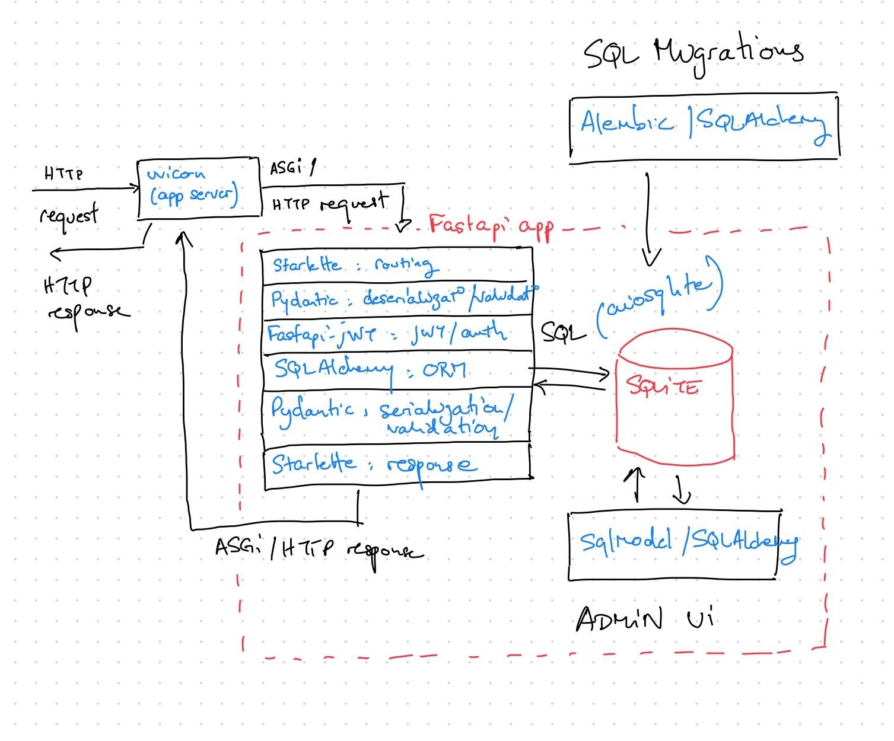

Design
5esheets was designed with several goals in mind:
- use modern and robust backend and frontend tooling, as a playground for experimentation
- build on top of giants, to minimize boilerplate code
- be fully external-dependencies-free (database, search engine, cache, etc). Everything should leverage SQLite to make the app extremely easy to run, and the data trivial to backup.
- depart from the official 5e character sheet layout where we find it appropriate, to allow you to input as much information as you need
- link all SRD items, spells, etc to 5e.tools
- implement the character sheet as an SPA that would query a backend API, for ease of use
Technical design choices
We have designed 5esheets by making deliberate technical choices, revolving around a mix of experimentation with modern tooling, while making the application as robust and pleasant to develop in as possible.
Design choices for the backend application

Language
We chose Python for our backend. It's a language we know really well, that is fast enough for what we have in mind, with an extremely rich set of libraries to build web applications and API with.
Web framework
We decided to rely on FastAPI for the backend API. It handles request routing and parsing, input/output payload schema validation and (de)serialization, and OpenAPI schema generation (amongst many other things). It is fully compatible with the async/await Python features, allowing us to rely on asynchonous SQL queries to minimize the server footprint (a single process/thread is required).
Authentication
We leverage JWTs to authenticate API calls to the backend. To avoid reinventing the wheel when it comes to security, we used fastapi-jwt (which is more actively maintained than fastapi-auth-jwt) rather than implementing this layer ourselves, as suggested in the FastAPI documentation.
ORM
We rely on SQLAlchemy to execute SQL requests asynchonously. It integrates well with Pydantic (the library used by FastAPI to validate schemas), allowing us to easily define input/output schemas based on the ORM models.
Admin UI
We rely on SQLAdmin to integrate with our SQLAlchemy models in order to display an admin UI for our backend data.
Database
We use SQLlite to store the data, as it is a much more competent database that usually given credit for. We use it as a regular SQL database, as well as a full-text search engine for SRD resources.
Design choices for the frontend application
Language
We rely on Typescript to help us write correct code, free of runtime crashes. It is a battle-tested language, widely used in production in products with, much, much more stringent reliability requirements than this one.
API Client
We rely on openapi-typescript-codegen to automatically generate the API client, models and interfaces for the 5esheets API client used by our frontend, based on the OpenAPI json schema generated by FastAPI. This allows us to iterate quickly on our data model while keeping the amount of manual synchronization between our backend and frontend close to nil.
Reactivity library
Instead of going for React, we decided to experiment with SolidJS. This is where we spent our innovation token, as it took us quite a while to get accustomed to. We wanted a modern reactivity library that was as efficient as possible, with as much explicitness as possible in the definition of depencencies between components.